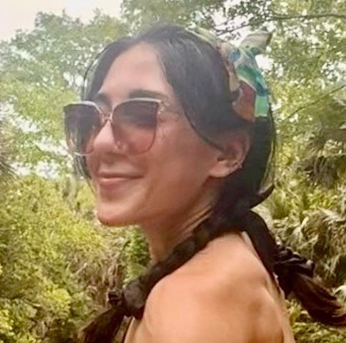

phd candidate | cognition + cog neuro
I study the processes that underpin cognition, like perception, linguistic encoding, and learning. As a cognitive scientist, I'm most fascinated by our seemingly intuitive circuits of thought and talk, though my years wrangling text and toddlers both inform the way I make sense of, and try to model naturalistic phenomena.
I am currently pursuing my doctorate at Florida State University, and previously completed postgraduate studies at both the University of Colorado Boulder and the University at Buffalo after earning my undergraduate degree from the University of Texas at Austin.